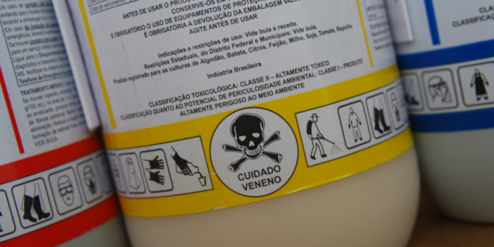

Problema de pesquisa
- Plantas: Batata inglesa
- Materiais: Batata brotada, azulejo, faca, 1 frasco com solução desinfetante de hipoclorito de sódio (água sanitária comercial diluída à metade), 3 frascos com água estéril, 6 tubos de ensaio contendo meio nutriente* com água de coco estéril, palitos esterilizados, álcool 70%, bico de Bunsen (opcional).
- Início do experimento: No final do primeiro trimestre.
- Acompanhamento: Registro semanal das observações nas planilhas e guardar dentro da pasta de seu respectivo grupo.
- Dados de interesse: Tamanho (parâmetro de crescimento: massa x tempo) , se houve germinação, a coloração das folhas, se houve ou não a contaminação.
- Análise: Realização de experimentos com temperaturas diferentes (ambiente e com o auxílio de uma lâmpada incandescente e fluorescente). Acompanhamento semanal da evolução dos parâmetros (peso, massa seca)
- Divulgação: Banners em uma mostra para a sociedade com os diferentes componentes curriculares.
- Brainstorming: reunindo os conhecimentos prévios através de experiências próprias, compartilhando entre pares, cada cursista é de uma região diferente e cada um possui uma vivência distinta.
Pesquisa: em uma fonte confiável para obtenção de dados e realização de uma tabulação e um quadro afim de resolver um problema inicial. Houve ainda algumas discussões sobre os dados visto que, repetindo, cada cursista é de uma região diferente do Parana (projeção da viabilidade do projeto).
- Aprendizagem baseada em projetos: como foi partido de um problema inicial, foi então realizado algumas suposições, especulações e recortes necessários para viabilizar o projeto.
